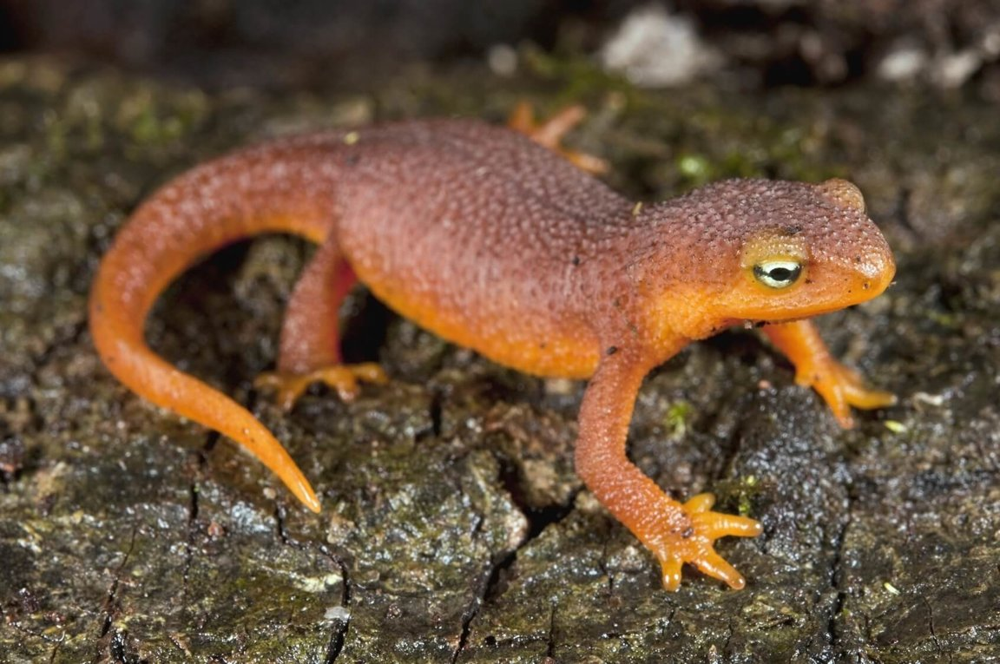

Newt
Small amphibians with smooth skin and a long tail.
- Species: Triturus
- Diet: Carnivore
- Size: 4-7 inches long
- Weight: 0.5-1 ounce
- Life span: 6-14 years
- Habitat: Ponds, woodlands
- Found: Europe, Asia, Americas
- Can be pet: No
Trivia: Newts can regenerate lost limbs and even parts of their heart.